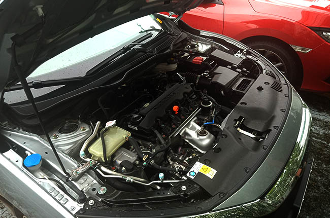
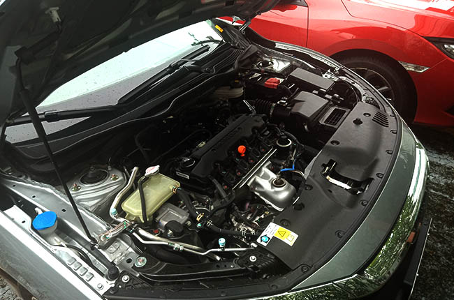

The Los Santos Customs story begins back in 1962. The market for replacement tires was exploding, and independent tire dealers found themselves struggling to compete with major tire manufacturers' own company stores. Luckily, Los Santos Customs founding fathers, a handful of progressive independent tire dealers with a common belief that service matters, came together to form a tire-buying cooperative. In the following years, Los Santos Customs evolved into a full-fledged franchise as it continued to find innovative ways to benefit independent dealerships and their customers. And thus, The Team You Trust® was born.
Then in 1996, Los Santos Customs joined forces with TBC Corporation, one of North America’s largest marketers of automotive replacement tires.
 
